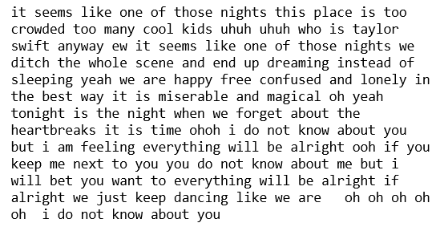

Introduction to rlyrics
Abhiket Gaurav, Artan Zandian, Macy Chan, Manju Abhinandana Kumar
Last compiled on 03 February, 2022
Intro_to_rlyrics.RmdThis document introduces you to the rlyrics package
and all the functions inside it. Here to explore the package we have
used data fetched from kaggle
dataset as an example. Once you have installed the package read
vignette("Intro to rlyrics") to learn more about it.
Set up
To get access to the Kaggle API, sign up for a Kaggle account at Kaggle. Then go to the ‘Account’ tab of your user profile (https://www.kaggle.com/<username>/account) and select ‘Create API Token’. This will trigger the download of kaggle.json, a file containing your API credentials. Place this file in the location ~/.kaggle/kaggle.json. The function will automatically read your Kaggle credentials from the above path.
For more information about API call limits and API care recommendations please visit the Kaggle API.
Overview
The goal of rlyrics is to extract and analyze lyrics. It provides functions to download songs attribute, extract lyrics, clean text and generate a word cloud. It makes all the steps seamless and fast.Using this package a user can analyse any (English) lyrics from any artist
The package is an assimilation of four independent functions:
download_data(): The download data function downloads dataset from Kaggle, extracts the given columns from csv file and creates a dataframe.extract_lyrics(): The extract lyrics function, extracts the lyrics from API for a song title and artist and saves it as a dataframe with columns song title, artist and lyrics.clean_text(): The lyrics extracted from extract_lyrics() are not clean. It removes special characters, html tags, #tags, contraction words and converts everything to lower case.plot_cloud(): The plot cloud function creates a word cloud of most occurring words in a song/songs by an artist.
Load the library
library(rlyrics)1. Downloading and Selecting
The first function in our library is the
rlyrics::download_data(). This functions downloads the data
and extracts the columns into a dataframe.
dataset <- "geomack/spotifyclassification"
df <- rlyrics::download_data(dataset, c("song_title", "artist"))
#> New names:
#> * `` -> ...1
#> Rows: 1969 Columns: 17
#> ── Column specification ────────────────────────────────────────────────────────
#> Delimiter: ","
#> chr (2): song_title, artist
#> dbl (15): ...1, acousticness, danceability, duration_ms, energy, instrumenta...
#>
#> ℹ Use `spec()` to retrieve the full column specification for this data.
#> ℹ Specify the column types or set `show_col_types = FALSE` to quiet this message.
head(df)
#> # A tibble: 6 × 2
#> song_title artist
#> <chr> <chr>
#> 1 Mask Off Future
#> 2 Redbone Childish Gambino
#> 3 Xanny Family Future
#> 4 Master Of None Beach House
#> 5 Parallel Lines Junior Boys
#> 6 Sneakin’ Drake2. Extracting Lyrics
The second function in our library is the
rlyrics::extract_lyrics(). This function gets the
song_title and artist name, checks validity and availability of the
combination, and extracts the lyrics for that song in a raw string
format with header, footer etc which needs to be cleaned in order to
create a human-readable text.
lyrics <- rlyrics::extract_lyrics( "22", "Taylor Swift")3. Cleaning the text
As we see the raw lyrics need to be cleaned, that’s where our third
function rlyrics::clean_text() comes to play. This function
turns the raw lyrics into a human-readable text, by removing all the
HTML Tags, hash tags, contraction words, special characters. It also
coverts everything to lower case
clean_text <- rlyrics::clean_text(lyrics)
4. Creating WordCloud
In the last and final function we are using Word Cloud. WordCloud is an artistic rendering of the most frequent words in a text document. A higher occurrence for a word is translated into a larger text size. At this stage, we have helper functions to facilitate the extraction and cleaning of lyrics.
The rlyrics::plot_cloud() function accepts a dataframe
with multiple artists and multiple song_title data. It will then extract
the lyrics for all songs and saves a WordCloud of the most occurring
terms in the file_path provided by the user. The WordCloud parameters to
be set are self-explanatory: max_font_size,
max_word and background_color.
song <- data.frame(song_title = c("22", "Bohemian Rhapsody"),
artist = c("Taylor Swift", "Queen"))
# plotting and saving WordCloud
word_cloud <- rlyrics::plot_cloud(song, max_font_size=1.6, max_words=100, background_color="white")